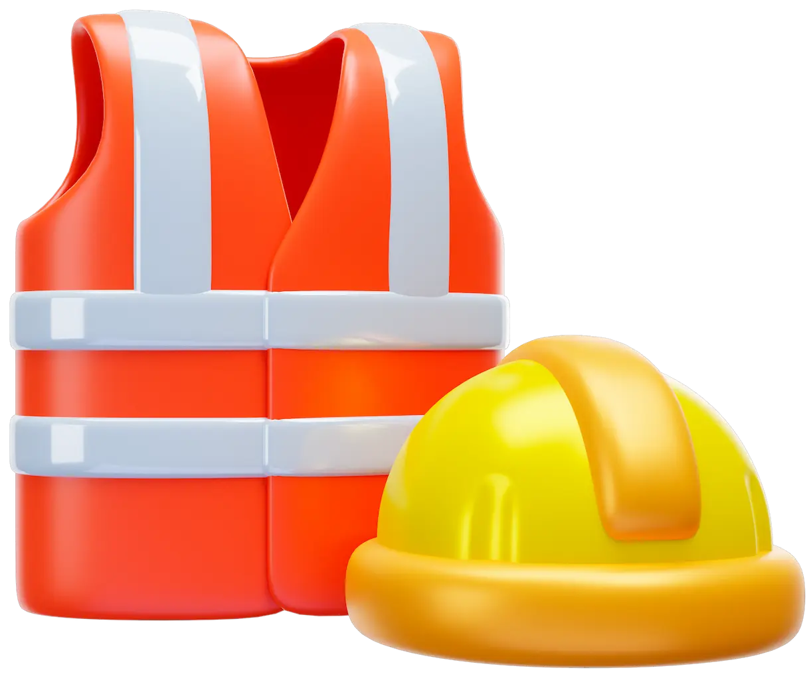

Capacitaciones y consultorias
En SCO, nos dedicamos a brindar servicios especializados en materia de seguridad e higiene para empresas y organizaciones de diversos sectores.

En SCO, nos dedicamos a brindar servicios especializados en materia de seguridad e higiene para empresas y organizaciones de diversos sectores.
Las inspecciones STPS se enfocan en aspectos como las condiciones de trabajo, la seguridad y salud laboral, el pago de salarios y el cumplimiento de las jornadas laborales. Su objetivo es proteger los derechos laborales y asegurar un entorno laboral seguro.
Las inspecciones de medio ambiente verifican el cumplimiento de las regulaciones ambientales, incluyendo la gestión de residuos, la prevención de la contaminación y el uso responsable de los recursos naturales. Estas inspecciones buscan promover la sostenibilidad y la protección del entorno natural.